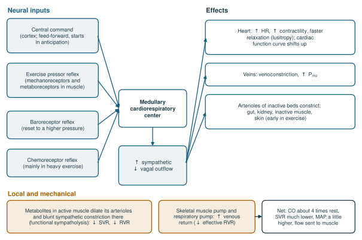
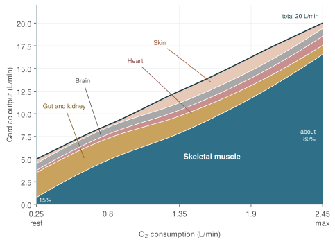
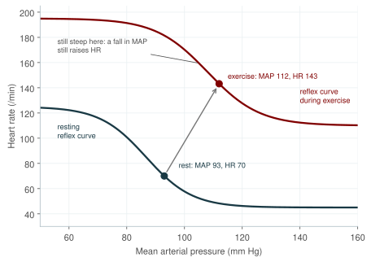
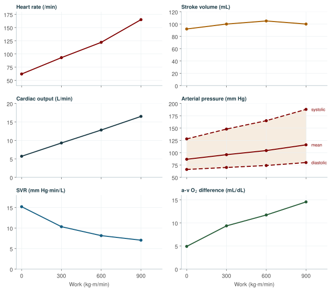
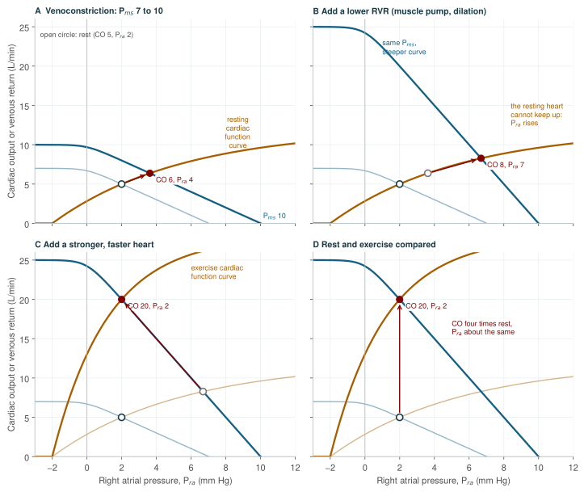
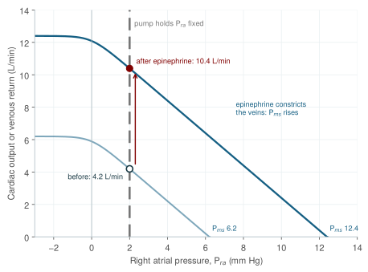

15 Cardiovascular Adaptation to Exercise
How the heart, the vessels and the reflexes raise cardiac output fourfold
- Describe how much O2 consumption and cardiac output rise in exercise.
- Explain central command, the exercise pressor reflex and baroreflex resetting, and what each does to sympathetic and vagal outflow.
- Explain how metabolic vasodilation in active muscle overrides sympathetic constriction there (functional sympatholysis) and redistributes the cardiac output.
- Explain how the skeletal muscle and respiratory pumps help venous return.
- Predict the integrated changes in HR, SV, CO, SVR, MAP, pulse pressure and Pra.
- Draw exercise on the cardiac and vascular function curves, one change at a time, and explain why Pra barely changes.
- Explain why the rise in cardiac output is not simply a result of the rise in heart rate.
Names, dates and the exact values in figure captions are context, not things to memorize.
Hemorrhage, heart failure and sepsis test how the circulation defends itself when something breaks (Cardiovascular Integration and Adaptation). Exercise tests it from the other side: nothing is broken, but the demand rises tenfold. If you want to see how a system works as a whole, and where its limits are, push it. This chapter follows the cardiovascular side. The respiratory response, O2 extraction and cardiopulmonary exercise testing are in Physiology of Exercise.
15.1 How much more is needed
At rest a young adult consumes about 3.5 mL of O2 per kilogram per minute. At maximal exercise an average healthy young adult reaches about 35 mL/kg/min, a tenfold rise. Elite endurance athletes reach roughly 80 to 97 mL/kg/min. Some animals go much further: racehorses about 180, sled dogs about 240, and the pronghorn about 300 mL/kg/min.
Almost all the extra O2 goes to working skeletal muscle, and it has to be carried there by blood. The circulation meets the demand in two ways: it raises the cardiac output, and it sends most of that output to the muscles that need it. Muscles also pull more O2 out of each liter of blood (the arteriovenous O2 difference widens), which the pulmonary chapter covers.
15.2 The controls
Many signals act at once (Figure 15.1). The neural ones converge on the medullary cardiorespiratory center (the slide’s figure calls it the medullary cardiovascular control center), which raises sympathetic outflow and lowers vagal outflow. The local and mechanical ones act directly in the muscles and veins.

15.2.1 Central command
The cerebral cortex sends signals to the motor neurons and, in parallel, to the medullary cardiorespiratory center. This central command is feed-forward: it raises sympathetic outflow to the heart and vessels and lowers parasympathetic outflow before any metabolic signal has had time to build up. It starts even with the anticipation of exercise. Heart rate rises at the starting line, before the race begins. It continues as long as the motor command does.
The lecture asks what central command would do on its own. A faster, stronger heart and venoconstriction would raise cardiac output somewhat. But sympathetic nerves constrict arterioles throughout the body, skeletal muscle included, so on its own central command would raise blood pressure without sending much more blood to the muscles. The large rise in muscle flow needs the next mechanism.
15.2.2 Metabolic dilation in active muscle
The major vascular adjustment to exercise is local. Contracting muscle releases metabolites (lower PO2, higher PCO2 and H+, K+, adenosine and others), and these dilate its arterioles (Microcirculation and Local Control). Blood flow through active muscle can rise about twentyfold. Circulating epinephrine from the adrenal medulla adds some β2 dilation (Other Special Circulations). The sympathetic nerves themselves constrict muscle arterioles; the vasodilator nerve fibers to active muscle drawn on the slide’s textbook figure are not part of this course.
This happens even though sympathetic outflow to the same muscle is rising. In active muscle, the local metabolites blunt the response of the arterioles to sympathetic constriction, so local control wins. That is functional sympatholysis. In inactive tissue the sympathetic signal is not opposed, and the arterioles constrict. The same rise in sympathetic outflow therefore has opposite net effects in active and inactive beds, and that is how blood is redistributed toward the muscles that need it.
Dilation of so many muscle arterioles lowers SVR. A lower SVR keeps afterload from rising much even as MAP rises and CO quadruples, which lets the stronger heart eject a larger stroke volume. Slide 9 calls this a reduction in afterload: the load is small for the flow being pumped, even though arterial pressure is a little higher than at rest. The course also treats this dilation, together with the muscle pump below, as lowering RVR, which is why exercise is the one setting where the slope of the vascular function curve matters.
15.2.3 Where the blood goes
At rest, skeletal muscle receives about 15% of a cardiac output of about 5 L/min. At maximal exercise it receives about 80% of a cardiac output four times larger (Figure 15.2).

- Skeletal muscle takes most of the increase, under local metabolic control.
- Heart. Coronary flow rises in proportion to the heart’s extra work, also under metabolic control (Coronary Circulation).
- Brain. Flow stays nearly constant. Cerebral vessels are under local control.
- Gut and kidney. Sympathetic constriction reduces their flow, and splanchnic venoconstriction moves blood from that large venous reservoir into the central circulation (Other Special Circulations).
- Skin has a triphasic response. Early in exercise, sympathetic constriction lowers skin flow. As core temperature rises, the hypothalamus dilates skin vessels to lose heat, and skin flow rises. In strenuous exercise near the maximum, skin vessels constrict again, because the muscles and the blood pressure compete with temperature control for a cardiac output that can rise no further, and core temperature keeps climbing.
15.2.4 The muscle and respiratory pumps
Contracting muscle squeezes the veins inside it. One-way valves let blood go only toward the heart, so each contraction pushes blood back to the central circulation, and each relaxation lets the veins refill from the capillaries. The small groups describe the rhythmically contracting muscles with their valved veins as a second pump in series with the heart. The course lumps the skeletal muscle pump into RVR: the pump lowers the effective resistance to venous return.
Breathing helps in the same way. Each deeper, faster breath lowers the pressure in the chest around the right atrium and great veins and raises the pressure in the abdomen as the diaphragm descends, so blood moves from the abdomen into the chest.
15.2.5 The exercise pressor reflex
Contracting muscle also sends signals back to the brain. Mechanoreceptors respond to stretch and pressure in the working muscle, and chemoreceptors in the muscle (metaboreceptors) respond to the metabolites that accumulate there. Their afferents reach the medullary center and raise sympathetic outflow. This exercise pressor reflex raises heart rate, contractility and blood pressure. Its metabolite-sensing part, the muscle metaboreflex, grows when muscle flow cannot keep up with demand, for example in heavy or sustained contraction.
The arterial chemoreceptors add sympathetic drive mainly in heavy exercise, when lactic acid lowers the blood pH. In moderate exercise, arterial PO2, PCO2 and pH stay close to normal.
15.2.6 Baroreflex resetting
In exercise, blood pressure and heart rate rise together. At rest, a rise in pressure would make the baroreflex slow the heart, so the baroreflex cannot be working the same way. It is not switched off. Central command and the muscle afferents reset it to regulate around a higher pressure and over a higher range of heart rates (Figure 15.3). At the new operating point the reflex still works: a sudden fall in pressure during exercise still speeds the heart, and a sudden rise still slows it. The course’s phrase is “reset, not turned off.” The flowchart on slide 9 shows the reset reflex at work. Dilation of so many muscle arterioles tends to lower arterial pressure, the baroreceptors sense it, and the reflex raises heart rate and constricts the arterioles of inactive muscle, gut, skin and kidney.

The slides describe functional sympatholysis, the exercise pressor reflex, the muscle metaboreflex and baroreflex resetting without naming them. This chapter uses the names so each mechanism has a handle.
15.3 The heart has to keep up
Venous return can rise only if the heart pumps it on. Sympathetic stimulation through β1 receptors, together with less vagal outflow, changes three properties of the heart:
- Chronotropy: heart rate rises.
- Inotropy (contractility): the ESPVR steepens, so the ventricle ejects more and empties further at a given end-diastolic volume.
- Lusitropy: the ventricle relaxes faster, so it fills quickly enough in a shorter diastole.
These are three separate properties. Contractility means inotropy only (course errata entry 2). All three raise cardiac output, and on the cardiac function curve all three shift the curve up.
Figure 15.4 shows how the main variables change as the work rate rises.

| Variable | Change in dynamic exercise | Main reason |
|---|---|---|
| Heart rate | ↑↑ (about 70 to 180/min) | Central command, less vagal and more sympathetic outflow |
| Stroke volume | ↑ (about 70 to 110 mL) | More venous return and preload, more contractility, a low SVR |
| Cardiac output | ↑↑ (about 5 to 20 L/min) | HR × SV |
| SVR | ↓↓ | Metabolic dilation in active muscle |
| MAP | slightly ↑ | CO rises more than SVR falls |
| Pulse pressure | ↑ | Larger stroke volume; systolic rises more than diastolic |
| Pra | about unchanged | Venous return and the heart rise together (next section) |
| Pms | ↑ | Venoconstriction |
| RVR | ↓ | Muscle pump and muscle vasodilation |
Cardiac output in a healthy young adult can reach about four times its resting value. Well-trained athletes can reach 35 to 40 L/min.
15.4 Exercise on the cardiac and vascular function curves
Exercise moves both curves, and the vascular function curve changes in two ways at once. Taking the changes one at a time shows what each contributes (Figure 15.5).
- Venoconstriction raises Pms (panel A). The vascular function curve shifts right. Alone, this would slide the operating point up the resting cardiac function curve: a modest rise in CO, with Pra rising too.
- Muscle dilation and the muscle pump lower RVR (panel B). The vascular function curve becomes much steeper around the same Pms. With the resting heart, the operating point climbs further along the flattening cardiac function curve, and Pra rises a lot. The heart has become the bottleneck: venous return is offered, and the heart cannot pump it on without a high filling pressure.
- The heart’s curve rises (panel C). Faster rate, more contractility and faster relaxation shift the cardiac function curve up. The operating point slides up and to the left along the new, steep vascular function curve, to a CO about four times rest.
- The result (panel D). Compared with rest, CO has risen about fourfold while Pra is about the same. The exercise lecture in the pulmonary block quotes a six- to eightfold rise, which is what trained athletes reach. A typical young adult reaches about four times rest. The pulmonary Physiology of Exercise chapter covers the rest of that lecture: maximal heart rate, the “cardiac limited” point, and the O2 pulse as a stand-in for stroke volume.
The small group draws the heart first, following slide 11: Pra then falls before the vessels bring it back up. Either order ends at the same operating point.

Seeing that the new operating point is higher is not the answer. In exercise, an unchanged Pra with a large rise in CO means that both curves moved: if only the vascular function curve had moved, Pra would have risen (panels A and B), and if only the heart had changed, Pra would have fallen. The Pra stays put because the vessels offer more venous return and the heart takes it away as fast as it arrives.
The flowchart of the muscle’s mechanical effects (from Boron and Boulpaep) runs: muscle pump → ↑ venous return → ↑ right atrial pressure → ↑ EDP → ↑ EDV → ↑ stroke volume. The integrated table says Pra is about unchanged in exercise. Both are right. The flowchart follows one mechanism by itself, the muscle pump acting on an unchanged heart, as in panel B of Figure 15.5. Once sympathetic stimulation raises the cardiac function curve as well (panel C), the heart pumps the extra venous return on without a higher filling pressure. Stroke volume rises from more venous return, more contractility and a low SVR, and end-diastolic volume rises only a little.
15.5 Strenuous exercise and its limits
As exercise approaches the maximum:
- Heart rate approaches the person’s maximal predicted heart rate, if the person is willing to work that hard. Maximal heart rate falls with age.
- Stroke volume levels off and begins to fall, because at very high rates diastole becomes too short to fill the ventricle fully.
- Skin vessels constrict to keep blood in the muscles and maintain pressure, so heat loss falls and core temperature rises.
- Acidosis develops as working muscle makes more lactic acid than can be cleared.
There is a maximal heart rate and a maximal cardiac output, and in health the cardiovascular system, not breathing, limits maximal exercise. The pulmonary chapter shows why the lungs have reserve left at that point.
15.6 When exercise stops
The small group’s case is a runner who collapses just after crossing the finish line of a marathon, having drunk little on the way. While she was running, her pressure was held up by the changes in both curves. Sweating had already lowered her blood volume and Pms. When she stopped, sympathetic outflow and metabolic demand fell, so heart rate and contractility began to return toward rest, and the skeletal muscle pump stopped. In the course’s convention, losing the muscle pump raises RVR, so the vascular function curve flattens. Venous return, CO and blood pressure all fell.
15.7 Is the rise in cardiac output due to the rise in heart rate?
The lecture’s table for a healthy young person:
| State | HR (/min) | SV (mL) | CO (L/min) |
|---|---|---|---|
| Rest | 70 | 70 | 4.9 |
| Exercise | 180 | 110 | 19.8 |
Heart rate rises about 2.6-fold and stroke volume about 1.6-fold, so it is tempting to say the heart rate did most of the work. That misses what is happening to stroke volume. If you pace a resting heart from 70 to 180/min, cardiac output barely changes: diastole shortens, the ventricle fills less, and stroke volume falls. The vessels are still returning the same amount of blood, and the heart can only pump what comes back. In exercise, stroke volume rises at a rate of 180/min. That can happen only because venous return has risen (higher Pms, lower RVR, the muscle and respiratory pumps), contractility and lusitropy have risen, and the fall in SVR has kept afterload from rising much. Heart rate matters, but the rise in cardiac output depends on the vessels returning more blood.
15.7.1 A puzzle: epinephrine and a mechanical pump
The lecture ends with an experiment in an animal model of the circulation. Epinephrine is infused:
| State | HR (/min) | SV (mL) | CO (L/min) |
|---|---|---|---|
| Before epinephrine | 120 | 35 | 4.2 |
| After epinephrine | 160 | 65 | 10.4 |
The obvious reading is that epinephrine made the heart beat faster and harder. Then the heart is replaced by a mechanical pump set to keep right atrial pressure constant, the same dose of epinephrine is given, and the cardiac output rises in the same way. The pump has no receptors for epinephrine. How is this possible?
The answer is in the venous return equation. A pump that holds Pra constant pumps out whatever arrives. Epinephrine constricts the veins, which raises Pms, so at the same Pra venous return rises (Figure 15.6), and the pump delivers it. The rise in cardiac output came from the vessels.

So what does the heart do? The lecture gives two answers:
- The blood in the peripheral vessels, chiefly the veins, has an elastic recoil pressure (Pms) that drives blood back to the heart, and Pra is the back pressure against that flow. The heart controls cardiac output by keeping Pra low.
- The heart returns to the systemic circulation the blood that drains out of it into the heart and lungs, and so maintains Pms.
A healthy heart permits a high cardiac output by pumping on whatever the vessels return, without letting Pra rise. The vessels set how much returns. That is why, in exercise, the heart’s curve and the vessels’ curve have to rise together.
Finding the new operating point is not the same as finding its cause. In the epinephrine experiment, heart rate and stroke volume both rose, yet the rise in cardiac output was produced by the veins. In exercise, a higher CO at an unchanged Pra means both curves moved. Before you name a cause, ask which curve the new point lies on. That test works only when one curve has moved: if Pra did not change while CO did, or the change is larger than one curve could produce, both curves moved, and you take them one at a time.
The lecture marks training effects as not on the test. Endurance training raises maximal O2 consumption. At rest, vagal tone is higher and sympathetic tone lower, so a trained person has a lower resting heart rate and a larger resting stroke volume. Trained muscles have lower vascular resistance, more capillaries, more mitochondria and more oxidative enzyme activity, and they extract more O2 during exercise. Maximal cardiac output is higher because maximal stroke volume is higher. Genetic factors matter as well.
Fatigue is not only a matter of the muscles and heart. The lecture shows studies in which reduced brain oxygenation and metabolism during exhausting exercise went with reduced activation of the muscles, a central fatigue that is more than motivation or willpower.
15.8 Check your understanding
A sprinter crouches in the blocks before the starting gun. What is happening to her heart rate and venous tone, and why can this not by itself deliver the muscle blood flow she is about to need?
Answer
Central command, a feed-forward signal from the cortex, raises sympathetic outflow and lowers vagal outflow before the race starts. Heart rate and contractility rise, and the veins constrict and raise Pms. But sympathetic nerves also constrict arterioles in skeletal muscle. The large rise in muscle flow needs local metabolic dilation, which begins only when the muscles start working.
An α1 agonist is infused into the brachial artery at the same dose on two occasions: once with the forearm at rest, and once while the subject does rhythmic handgrip exercise. Forearm vascular resistance rises much more at rest. Why?
Answer
In the exercising forearm, the contracting muscle releases metabolites (lower PO2, higher PCO2 and H+, K+, adenosine) that dilate its arterioles and blunt their response to α1 constriction. This is functional sympatholysis, and it opposes a drug at the α1 receptor just as it opposes norepinephrine from the sympathetic nerves. In the resting forearm there are no extra metabolites to oppose the drug, so the arterioles constrict fully and resistance rises a lot.
In exercise, MAP rises from about 93 to about 110 mm Hg while CO rises from 5 to 20 L/min. Roughly what has happened to SVR, and where?
Answer
MAP ≈ CO × SVR, so SVR has gone from about 93/5 ≈ 19 to about 110/20 ≈ 5.5 mm Hg·min/L, under a third of its resting value, a larger fall than in the graded-exercise figure’s subject. The fall comes from metabolic dilation of arterioles in the active muscle, which is a large share of the body’s parallel vascular beds. The constriction in gut, kidney and inactive muscle offsets only a little of it.
Suppose that during exercise the veins constricted and RVR fell as usual, but the cardiac function curve stayed at its resting position. Predict CO and Pra compared with normal exercise.
Answer
The steeper, right-shifted vascular function curve would meet the resting cardiac function curve high on its flat part. CO would rise less than normal, and Pra would rise a lot (panel B of Figure 15.5). The heart, not the vessels, would limit output, and the extra filling pressure would show up as congestion.
During a hard run, blood pressure is 160/80 mm Hg and heart rate 150/min. At rest, a pressure of 160/80 would make the baroreflex slow the heart. Is the baroreflex switched off during exercise?
Answer
No. Central command and the exercise pressor reflex reset it to regulate around a higher pressure and a higher heart rate. A sudden drop in pressure during the run would still speed the heart. The reflex is reset, not turned off.
Stroke volume rises from 70 to 110 mL in exercise even though the heart rate of 180/min shortens filling time. Name the changes that make this possible.
Answer
More venous return (higher Pms from venoconstriction, lower RVR from muscle dilation and the muscle pump, and the respiratory pump), so preload is maintained. Higher contractility, so the ventricle empties further. Faster relaxation (lusitropy), so the ventricle fills quickly enough in a short diastole. A low SVR, which keeps afterload from rising much. If the heart were paced to 180/min at rest, none of these would change, and stroke volume would fall.
15.9 Key equations
| Equation | Use |
|---|---|
| CO = HR × SV | Why SV must rise as well as HR |
| VR = (Pms − Pra)/RVR; CO = VR | Exercise on the cardiac and vascular function curves |
| MAP − Pra = CO × SVR; MAP ≈ CO × SVR | Why MAP rises only a little |
15.10 Sources
This chapter follows the Cardiovascular Integration and Adaptation lecture on exercise for MEDC 30504 and draws on the peer-educator notes, the small-group case on exercise, the cardiovascular part of the pulmonary exercise lecture, and the course’s 2018 notes, corrected and updated. All figures were drawn for this book.